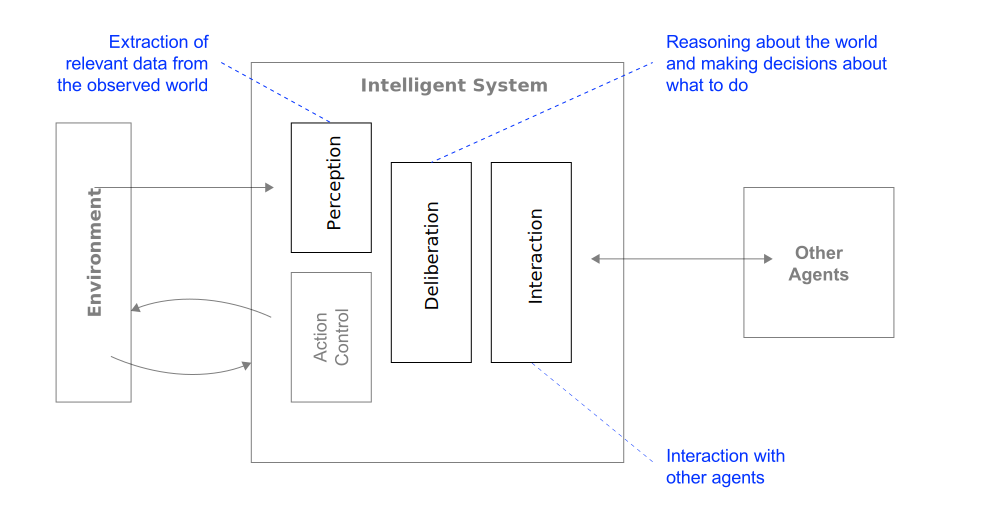
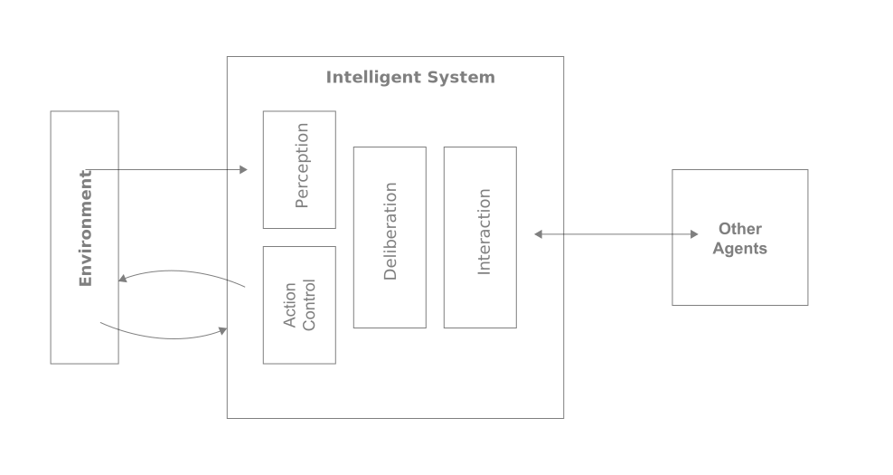
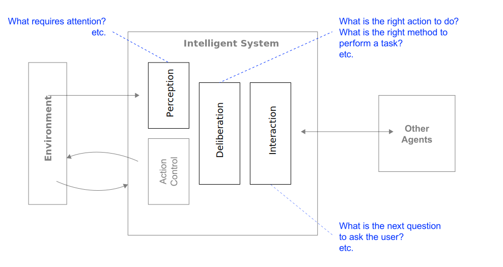
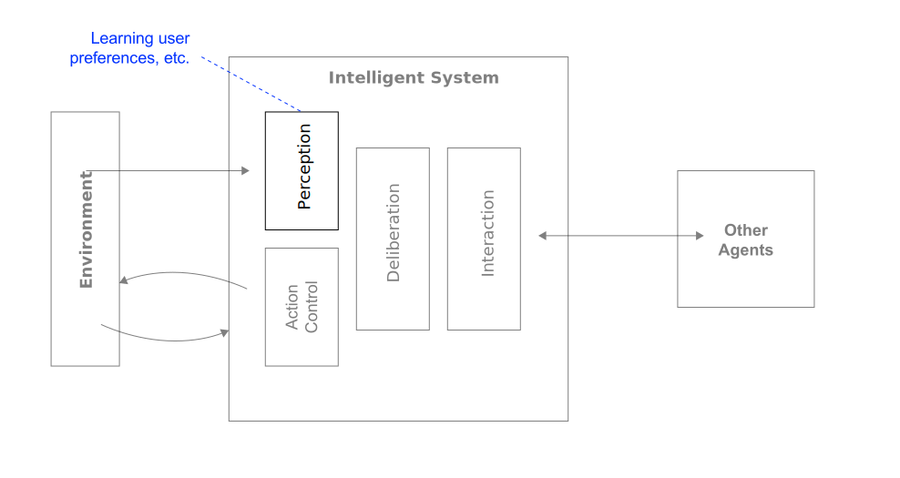

<!DOCTYPE html>
<html xmlns="http://www.w3.org/1999/xhtml" lang="en" xml:lang="en"><head>

<meta charset="utf-8">
<meta name="generator" content="quarto-1.4.549">

<meta name="viewport" content="width=device-width, initial-scale=1.0, user-scalable=yes">

<meta name="author" content="Andy Weeger">
<meta name="dcterms.date" content="2024-04-24">

<title>awe.lectures - Intelligence and affectiveness</title>
<style>
code{white-space: pre-wrap;}
span.smallcaps{font-variant: small-caps;}
div.columns{display: flex; gap: min(4vw, 1.5em);}
div.column{flex: auto; overflow-x: auto;}
div.hanging-indent{margin-left: 1.5em; text-indent: -1.5em;}
ul.task-list{list-style: none;}
ul.task-list li input[type="checkbox"] {
  width: 0.8em;
  margin: 0 0.8em 0.2em -1em; /* quarto-specific, see https://github.com/quarto-dev/quarto-cli/issues/4556 */ 
  vertical-align: middle;
}
/* CSS for citations */
div.csl-bib-body { }
div.csl-entry {
  clear: both;
  margin-bottom: 0em;
}
.hanging-indent div.csl-entry {
  margin-left:2em;
  text-indent:-2em;
}
div.csl-left-margin {
  min-width:2em;
  float:left;
}
div.csl-right-inline {
  margin-left:2em;
  padding-left:1em;
}
div.csl-indent {
  margin-left: 2em;
}</style>


<script src="../../../../site_libs/quarto-nav/quarto-nav.js"></script>
<script src="../../../../site_libs/quarto-nav/headroom.min.js"></script>
<link href="../../../../assets/favicon.png" rel="icon" type="image/png">
<script src="../../../../site_libs/clipboard/clipboard.min.js"></script>
<script src="../../../../site_libs/quarto-html/quarto.js"></script>
<script src="../../../../site_libs/quarto-html/popper.min.js"></script>
<script src="../../../../site_libs/quarto-html/tippy.umd.min.js"></script>
<link href="../../../../site_libs/quarto-html/tippy.css" rel="stylesheet">
<link href="../../../../site_libs/quarto-html/quarto-syntax-highlighting.css" rel="stylesheet" id="quarto-text-highlighting-styles">
<script src="../../../../site_libs/bootstrap/bootstrap.min.js"></script>
<link href="../../../../site_libs/bootstrap/bootstrap-icons.css" rel="stylesheet">
<link href="../../../../site_libs/bootstrap/bootstrap.min.css" rel="stylesheet" id="quarto-bootstrap" data-mode="light">
<script src="../../../../site_libs/quarto-contrib/glightbox/glightbox.min.js"></script>
<link href="../../../../site_libs/quarto-contrib/glightbox/glightbox.min.css" rel="stylesheet">
<link href="../../../../site_libs/quarto-contrib/glightbox/lightbox.css" rel="stylesheet">
<script id="quarto-search-options" type="application/json">{
  "language": {
    "search-no-results-text": "No results",
    "search-matching-documents-text": "matching documents",
    "search-copy-link-title": "Copy link to search",
    "search-hide-matches-text": "Hide additional matches",
    "search-more-match-text": "more match in this document",
    "search-more-matches-text": "more matches in this document",
    "search-clear-button-title": "Clear",
    "search-text-placeholder": "",
    "search-detached-cancel-button-title": "Cancel",
    "search-submit-button-title": "Submit",
    "search-label": "Search"
  }
}</script>


<meta property="og:title" content="awe.lectures - Intelligence and affectiveness">
<meta property="og:description" content="Future Technologies &amp; Media (FTM)">
<meta property="og:site_name" content="awe.lectures">
</head>

<body class="floating nav-fixed slimcontent">

<div id="quarto-search-results"></div>
  <header id="quarto-header" class="headroom fixed-top quarto-banner">
    <nav class="navbar navbar-expand " data-bs-theme="dark">
      <div class="navbar-container container-fluid">
      <div class="navbar-brand-container mx-auto">
    <a class="navbar-brand" href="../../../../index.html">
    <span class="navbar-title">awe</span>
    </a>
  </div>
          <ul class="navbar-nav navbar-nav-scroll ms-auto">
  <li class="nav-item">
    <a class="nav-link" href="../../../../index.html"> 
<span class="menu-text">Start</span></a>
  </li>  
  <li class="nav-item">
    <a class="nav-link" href="https://www.hnu.de"> 
<span class="menu-text">HNU</span></a>
  </li>  
</ul>
          <div class="quarto-navbar-tools">
</div>
      </div> <!-- /container-fluid -->
    </nav>
  <nav class="quarto-secondary-nav">
    <div class="container-fluid d-flex">
      <button type="button" class="quarto-btn-toggle btn" data-bs-toggle="collapse" data-bs-target=".quarto-sidebar-collapse-item" aria-controls="quarto-sidebar" aria-expanded="false" aria-label="Toggle sidebar navigation" onclick="if (window.quartoToggleHeadroom) { window.quartoToggleHeadroom(); }">
        <i class="bi bi-layout-text-sidebar-reverse"></i>
      </button>
        <a class="flex-grow-1 no-decor" role="button" data-bs-toggle="collapse" data-bs-target=".quarto-sidebar-collapse-item" aria-controls="quarto-sidebar" aria-expanded="false" aria-label="Toggle sidebar navigation" onclick="if (window.quartoToggleHeadroom) { window.quartoToggleHeadroom(); }">      
          <h1 class="quarto-secondary-nav-title">Intelligence and affectiveness</h1>
        </a>     
    </div>
  </nav>
</header>
<!-- content -->
<header id="title-block-header" class="quarto-title-block default page-columns page-full">
  <div class="quarto-title-banner page-columns page-full">
    <div class="quarto-title column-body">
      <h1 class="title d-none d-lg-block">Intelligence and affectiveness</h1>
            <p class="subtitle lead">Future Technologies &amp; Media (FTM)</p>
                      </div>
  </div>
    
  <div class="quarto-title-meta-author column-body">
    <div class="quarto-title-meta-heading">Author</div>
    <div class="quarto-title-meta-heading">Organisation</div>
    
      <div class="quarto-title-meta-contents">
      <p class="author">Andy Weeger </p>
    </div>
    <div class="quarto-title-meta-contents">
          <p class="affiliation">
              Neu-Ulm University of Applied Sciences
            </p>
        </div>
    </div>

  <div class="quarto-title-meta column-body">

        
      <div>
      <div class="quarto-title-meta-heading">Published</div>
      <div class="quarto-title-meta-contents">
        <p class="date">April 24, 2024</p>
      </div>
    </div>
    
      <div>
      <div class="quarto-title-meta-heading">Modified</div>
      <div class="quarto-title-meta-contents">
        <p class="date-modified">May 7, 2024</p>
      </div>
    </div>
      
    </div>
    
  
  </header><div id="quarto-content" class="quarto-container page-columns page-rows-contents page-layout-full page-navbar">
<!-- sidebar -->
  <nav id="quarto-sidebar" class="sidebar collapse collapse-horizontal quarto-sidebar-collapse-item sidebar-navigation floating overflow-auto">
    <div class="sidebar-menu-container"> 
    <ul class="list-unstyled mt-1">
        <li class="sidebar-item sidebar-item-section">
      <div class="sidebar-item-container"> 
            <a class="sidebar-item-text sidebar-link text-start" data-bs-toggle="collapse" data-bs-target="#quarto-sidebar-section-1" aria-expanded="true">
 <span class="menu-text">Admin</span></a>
          <a class="sidebar-item-toggle text-start" data-bs-toggle="collapse" data-bs-target="#quarto-sidebar-section-1" aria-expanded="true" aria-label="Toggle section">
            <i class="bi bi-chevron-right ms-2"></i>
          </a> 
      </div>
      <ul id="quarto-sidebar-section-1" class="collapse list-unstyled sidebar-section depth1 show">  
          <li class="sidebar-item">
  <div class="sidebar-item-container"> 
  <a href="https://elearning.hnu.de/course/view.php?id=20492" class="sidebar-item-text sidebar-link" target="&quot;_blank&quot;">
 <span class="menu-text">Moodle</span></a>
  </div>
</li>
          <li class="sidebar-item">
  <div class="sidebar-item-container"> 
  <a href="../../../../lectures/FTM/24ST/admin/index.html" class="sidebar-item-text sidebar-link">
 <span class="menu-text">Administrivia 🧐</span></a>
  </div>
</li>
      </ul>
  </li>
        <li class="sidebar-item sidebar-item-section">
      <div class="sidebar-item-container"> 
            <a class="sidebar-item-text sidebar-link text-start" data-bs-toggle="collapse" data-bs-target="#quarto-sidebar-section-2" aria-expanded="true">
 <span class="menu-text">Lecture notes</span></a>
          <a class="sidebar-item-toggle text-start" data-bs-toggle="collapse" data-bs-target="#quarto-sidebar-section-2" aria-expanded="true" aria-label="Toggle section">
            <i class="bi bi-chevron-right ms-2"></i>
          </a> 
      </div>
      <ul id="quarto-sidebar-section-2" class="collapse list-unstyled sidebar-section depth1 show">  
          <li class="sidebar-item">
  <div class="sidebar-item-container"> 
  <a href="../../../../lectures/FTM/24ST/introduction/slides.html" class="sidebar-item-text sidebar-link" target="&quot;_blank&quot;">
 <span class="menu-text">Introduction</span></a>
  </div>
</li>
          <li class="sidebar-item">
  <div class="sidebar-item-container"> 
  <a href="../../../../lectures/FTM/24ST/immersion/slides.html" class="sidebar-item-text sidebar-link" target="&quot;_blank&quot;">
 <span class="menu-text">Immersion</span></a>
  </div>
</li>
          <li class="sidebar-item">
  <div class="sidebar-item-container"> 
  <a href="../../../../lectures/FTM/24ST/intelligence/slides.html" class="sidebar-item-text sidebar-link active" target="&quot;_blank&quot;">
 <span class="menu-text">Intelligence</span></a>
  </div>
</li>
      </ul>
  </li>
        <li class="sidebar-item sidebar-item-section">
      <div class="sidebar-item-container"> 
            <a class="sidebar-item-text sidebar-link text-start" data-bs-toggle="collapse" data-bs-target="#quarto-sidebar-section-3" aria-expanded="true">
 <span class="menu-text">Exam</span></a>
          <a class="sidebar-item-toggle text-start" data-bs-toggle="collapse" data-bs-target="#quarto-sidebar-section-3" aria-expanded="true" aria-label="Toggle section">
            <i class="bi bi-chevron-right ms-2"></i>
          </a> 
      </div>
      <ul id="quarto-sidebar-section-3" class="collapse list-unstyled sidebar-section depth1 show">  
          <li class="sidebar-item">
  <div class="sidebar-item-container"> 
  <a href="../../../../lectures/FTM/24ST/assignment/index.html" class="sidebar-item-text sidebar-link">
 <span class="menu-text">Assignment 📑</span></a>
  </div>
</li>
      </ul>
  </li>
    </ul>
    </div>
</nav>
<div id="quarto-sidebar-glass" class="quarto-sidebar-collapse-item" data-bs-toggle="collapse" data-bs-target=".quarto-sidebar-collapse-item"></div>
<!-- margin-sidebar -->
    <div id="quarto-margin-sidebar" class="sidebar margin-sidebar">
        <nav id="TOC" role="doc-toc" class="toc-active">
    <h2 id="toc-title">On this page</h2>
   
  <ul>
  <li><a href="#revision" id="toc-revision" class="nav-link active" data-scroll-target="#revision">Revision</a></li>
  <li><a href="#hypothesis-2" id="toc-hypothesis-2" class="nav-link" data-scroll-target="#hypothesis-2">Hypothesis 2</a></li>
  <li><a href="#intelligence" id="toc-intelligence" class="nav-link" data-scroll-target="#intelligence">Intelligence</a></li>
  <li><a href="#affections" id="toc-affections" class="nav-link" data-scroll-target="#affections">Affections</a></li>
  <li><a href="#hybrid-intelligence" id="toc-hybrid-intelligence" class="nav-link" data-scroll-target="#hybrid-intelligence">Hybrid intelligence</a></li>
  <li><a href="#literature" id="toc-literature" class="nav-link" data-scroll-target="#literature">Literature</a></li>
  </ul>
<div class="quarto-alternate-formats"><h2>Other Formats</h2><ul><li><a href="slides.html"><i class="bi bi-file-slides"></i>RevealJS (presentation)</a></li></ul></div></nav>
    </div>
<!-- main -->
<main class="content quarto-banner-title-block page-columns page-full column-body" id="quarto-document-content">


<section id="revision" class="level1 headline-only vertical-center page-columns page-full" data-background-color="#0333ff">
<h1 class="headline-only vertical-center" data-background-color="#0333ff">Revision</h1>
<!--

Schedule:

- Warm-up         10 min

-->
<section id="hypothesis-1" class="level2" data-background-color="#0333ff">
<h2 data-background-color="#0333ff" data-anchor-id="hypothesis-1">Hypothesis 1</h2>
<div class="large">
<p>Emerging information technologies enable <strong>multimodal</strong> and <strong>immersive</strong> systems.</p>
</div>
</section>
<section id="multimodality" class="level2 no-headline vertical-center page-columns page-full">
<h2 class="no-headline vertical-center" data-anchor-id="multimodality">Multimodality</h2>
<div class="xlarge">
<p><span class="fragment" data-fragment-index="1">Multi</span><span class="link-color fragment" data-fragment-index="2">modality</span></p>
</div>
<p><span class="fragment" data-fragment-index="1">Using more than one</span> <span class="link-color fragment" data-fragment-index="2">mode of communication to create meaning.</span></p>
<p>Multimodality emphasizes the importance of multiple modes (e.g., verbal, visual, spatial) to form overall understanding of a message.</p>

<div class="no-row-height column-margin column-container"><div class="margin-aside">
<p><span class="citation" data-cites="adami2016introducing">Adami (<a href="#ref-adami2016introducing" role="doc-biblioref">2016</a>)</span></p>
</div></div></section>
<section id="immersion" class="level2 page-columns page-full">
<h2 data-anchor-id="immersion">Immersion</h2>
<div class="medium">
<p>Immersion refers to the state of <span class="link-color">being deeply engaged, absorbed, or submerged in an environment</span>, either physically or mentally.</p>
</div>
<p>Immersion implies that the consciousness of the immersed person is detached from their physical self. Immersiveness is the quality or degree of being immersive.</p>

<div class="no-row-height column-margin column-container"><div class="margin-aside">
<p><span class="citation" data-cites="suh2018state">Suh and Prophet (<a href="#ref-suh2018state" role="doc-biblioref">2018</a>)</span>, <span class="citation" data-cites="lee2013presence">Lee, Chung, and Lee (<a href="#ref-lee2013presence" role="doc-biblioref">2013</a>)</span></p>
</div></div></section>
<section id="interdependency" class="level2">
<h2 data-anchor-id="interdependency">Interdependency</h2>
<div class="medium">
<p>Stimuli that determine the <span class="link-color">immersiveness</span> of environments created by technology are <span class="link-color">multimodal</span>.</p>
</div>
<div class="medium">
<p><span class="fragment fade-in-then-semi-out">Visual,</span> <span class="fragment fade-in-then-semi-out">auditory,</span> <span class="fragment fade-in-then-semi-out">tactile,</span> <span class="fragment fade-in-then-semi-out">olfactory, and</span> <span class="fragment fade-in-then-semi-out">interactive.</span></p>
</div>
</section>
</section>
<section id="hypothesis-2" class="level1" data-background-color="#0333ff">
<h1 data-background-color="#0333ff">Hypothesis 2</h1>
<div class="large">
<p>Emerging information technologies enable <strong>intelligent</strong> and <strong>affective</strong> systems.</p>
</div>
</section>
<section id="intelligence" class="level1 headline-only" data-background-color="#0333ff">
<h1 class="headline-only" data-background-color="#0333ff">Intelligence</h1>
<section id="discussion" class="level2 discussion-slide" data-background-color="#000">
<h2 class="discussion-slide" data-background-color="#000" data-anchor-id="discussion">Discussion</h2>
<div class="medium">
<p>What do we mean<br>
by <strong>intelligence</strong>?</p>
</div>
<p>Provide a description that outlines what intelligence could mean.<br>
Take 5 minutes to reflect in small groups.</p>
</section>
<section id="human-intelligence" class="level2">
<h2 data-anchor-id="human-intelligence">Human intelligence</h2>
<blockquote class="blockquote">
<p><strong>Human intelligence</strong> “covers the capacity to learn, reason, and adaptively perform effective actions within an environment, based on existing knowledge. This allows humans to adapt to changing environments and act towards achieving their goals.” <em><span class="citation" data-cites="dellermann2019hybrid">Dellermann et al. (<a href="#ref-dellermann2019hybrid" role="doc-biblioref">2019, 632</a>)</span></em></p>
</blockquote>
<p><span class="citation" data-cites="sternberg1985beyond">Sternberg et al. (<a href="#ref-sternberg1985beyond" role="doc-biblioref">1985</a>)</span> proposes three distinctive dimensions:</p>
<div class="incremental">
<ul class="incremental">
<li><strong>Componential intelligence</strong><br>
the ability to take apart problems and being able to see solutions not often seen</li>
<li><strong>Experiential intelligence</strong><br>
the ability to learn and adapt through evolutionary experience</li>
<li><strong>Contextual intelligence</strong><br>
the ability to create an ideal fit between the environment by adaptation, shaping, and selection</li>
</ul>
</div>
</section>
<section id="artificial-intelligence" class="level2">
<h2 data-anchor-id="artificial-intelligence">Artificial intelligence</h2>
<blockquote class="blockquote">
<p>‘AI system’ means a machine-based systems designed to <span class="fragment highlight-current-blue">operate with varying levels of autonomy</span> and that may <span class="fragment highlight-current-blue">exhibit adaptiveness after deployment</span> and that, <span class="fragment highlight-current-blue">for explicit or implicit objectives, infers, from the input it received</span>, how to <span class="fragment highlight-current-blue">generate output such as content, predictions, recommendations, or decisions</span>, that can <span class="fragment highlight-current-blue">influence physical or virtual environment</span> <span class="citation" data-cites="euAIAct2024">(<a href="#ref-euAIAct2024" role="doc-biblioref">European Commission 2024</a>)</span>.</p>
</blockquote>
<div class="fragment">
<p>Based on this definition, three main properties of intelligent agents can be distinguished:</p>
</div>
<div class="medium">
<p><span class="fragment fade-in-then-semi-out">Capacity to work in a complex environment<a href="#fn1" class="footnote-ref" id="fnref1" role="doc-noteref"><sup>1</sup></a>,</span> <span class="fragment fade-in-then-semi-out">cognitive abilities<a href="#fn2" class="footnote-ref" id="fnref2" role="doc-noteref"><sup>2</sup></a>, and</span> <span class="fragment fade-in-then-semi-out">complex intelligent behavior<a href="#fn3" class="footnote-ref" id="fnref3" role="doc-noteref"><sup>3</sup></a>.</span></p>
</div>
</section>
<section id="working-in-complex-environments" class="level2 headline-only" data-background-color="#f0f0f0">
<h2 class="headline-only" data-background-color="#f0f0f0" data-anchor-id="working-in-complex-environments">Working in complex environments</h2>
<section id="agents-and-environments" class="level3">
<h3 data-anchor-id="agents-and-environments">Agents and environments</h3>
<div class="quarto-figure quarto-figure-left">
<figure class="figure">
<p><a href="images/actor.svg" class="lightbox" data-glightbox="description: .lightbox-desc-1" data-gallery="quarto-lightbox-gallery-1" title="Necessary components to interact with complex environments"></a></p>
<figcaption>Necessary components to interact with complex environments</figcaption>
</figure>
</div>
<div class="notes">
<p>An agent is anything that can be viewed as perceiving its <strong>environment</strong> through <strong>sensors</strong> and acting upon that environment through <strong>actuators</strong>.</p>
</div>
</section>
<section id="example" class="level3">
<h3 data-anchor-id="example">Example</h3>
<div class="quarto-figure quarto-figure-left">
<figure class="figure">
<p><a href="images/thermostat.svg" class="lightbox" data-glightbox="description: .lightbox-desc-2" data-gallery="quarto-lightbox-gallery-2" title="Example for an intelligent systems"></a></p>
<figcaption>Example for an intelligent systems</figcaption>
</figure>
</div>
</section>
<section id="task-environment" class="level3">
<h3 data-anchor-id="task-environment">Task environment</h3>
<p>When designing an intelligent system, the <strong>task environment</strong> (i.e., the problem) must be specified as fully as possible, including</p>
<div class="medium">
<p><span class="fragment">Thep <span class="link-color">p</span>erformance measure</span><br>
<span class="fragment">the <span class="link-color">e</span>nvironment,</span><br>
<span class="fragment">the <span class="link-color">a</span>ctuators,</span><br>
<span class="fragment">and the <span class="link-color">s</span>ensors</span></p>
</div>
<div class="fragment">
<p><span class="citation" data-cites="RusselNorvig2022AIMA">Russel and Norvig (<a href="#ref-RusselNorvig2022AIMA" role="doc-biblioref">2022</a>)</span> call the task environment PEAS.</p>
</div>
<div class="notes">
<div class="callout callout-style-simple callout-note callout-titled">
<div class="callout-header d-flex align-content-center">
<div class="callout-icon-container">
<i class="callout-icon"></i>
</div>
<div class="callout-title-container flex-fill">
Example of an PEAS description
</div>
</div>
<div class="callout-body-container callout-body">
<p>Task environment of a taxi driver agent</p>
<ul>
<li><strong>P</strong>: Safe, fast, legal, comfortable, maximize profits, minimize impact on other road users</li>
<li><strong>E</strong>: Roads, other road users, police, pedestrians, customers, weather</li>
<li><strong>A</strong>: Steering, accelerator, brake, signal horn, display, speech</li>
<li><strong>S</strong>: Cameras, radar, speedometer, GPS, engine, sensors, accelerometer, microphones, touchscreen</li>
</ul>
<p>Source: <span class="citation" data-cites="RusselNorvig2022AIMA">Russel and Norvig (<a href="#ref-RusselNorvig2022AIMA" role="doc-biblioref">2022, 61</a>)</span></p>
</div>
</div>
</div>
</section>
<section id="properties" class="level3">
<h3 data-anchor-id="properties">Properties</h3>
<p>Task environments can be categorized along following dimensions <span class="citation" data-cites="RusselNorvig2022AIMA">(<a href="#ref-RusselNorvig2022AIMA" role="doc-biblioref">Russel and Norvig 2022, 62–64</a>)</span>:</p>
<div class="incremental">
<ul class="incremental">
<li>Fully observable ⇠⇢ partially observable</li>
<li>Single agent ⇠⇢ multi-agent</li>
<li>Deterministic ⇠⇢ nondeterministic</li>
<li>Episodic ⇠⇢ sequential</li>
<li>Static ⇠⇢ dynamic</li>
<li>Discrete ⇠⇢ continuous</li>
<li>Known ⇠⇢ unknown</li>
</ul>
</div>
<div class="notes">
<p><strong>Explanations</strong></p>
<ul>
<li>If an agent’s sensors give it access to the full state of the environment at any point in time, then we say that the task environment is <em>fully observable</em> (e.g., image analysis).</li>
<li>When multiple agents intend to maximize a performance measure that depends on the behavior of other agents, we say the environment is <em>multi-agent</em> (e.g., chess).</li>
<li>When the environment is completely determined by the current state and the actions performed by the agent(s), it is called a <em>deterministic</em> environment (e.g., crossword puzzle). When a model of the environment explicitly uses probabilities, it is called a <em>stochastic</em> environment (e.g., poker).</li>
<li>If an agent’s experience is divided into atomic episodes in which the agent receives a perception and then performs a single action, and if the next episode does not depend on the actions performed in the previous episodes, then we say that the task environment is <em>episodic</em> (e.g., image analysis).</li>
<li>If the environment changes while an agent is deliberating, then the environment is <em>dynamic</em> (e.g., taxi driving).</li>
<li>If the environment has a finite number of different states, we speak of <em>discrete</em> environments (e.g., chess).</li>
<li>If the outcomes (or outcome probabilities) for all actions are given, then the environment is <em>known</em> (e.g., solitaire card game).</li>
</ul>
<p>Source: <span class="citation" data-cites="RusselNorvig2022AIMA">Russel and Norvig (<a href="#ref-RusselNorvig2022AIMA" role="doc-biblioref">2022</a>)</span>, p.62-64</p>
</div>
<div class="notes">
<p>The hardest case is <em>partially observable, multi-agent, nondeterministic, sequential, dynamic, and continuous.</em></p>
</div>
</section>
<section id="exercise" class="level3 discussion-slide" data-background-color="#000">
<h3 class="discussion-slide" data-background-color="#000" data-anchor-id="exercise">Exercise</h3>
<div class="medium">
<p>Describe the task environment of a <strong>chess player</strong> and a <strong>autonomous car.</strong></p>
</div>
<p>Form small groups, take 15 minutes for this exercise and prepare yourself to present your findings.</p>
<div class="notes">
<p><strong>Chess player:</strong></p>
<ul>
<li>static</li>
<li>discrete</li>
<li>fully-observable</li>
<li>deterministic</li>
<li>sequential</li>
<li>known</li>
</ul>
<p><strong>Autonomous car</strong></p>
<ul>
<li>dynamic</li>
<li>continuos</li>
<li>partial-observable</li>
<li>stochastic</li>
<li>sequential</li>
<li>known</li>
</ul>
</div>
</section>
<section id="autonomous-vs.-advisor-system" class="level3">
<h3 data-anchor-id="autonomous-vs.-advisor-system">Autonomous vs.&nbsp;advisor system</h3>
<div class="r-stack">
<div class="quarto-figure quarto-figure-left">
<figure class="figure">
<p><a href="images/systemTypes-1.svg" class="lightbox" data-glightbox="description: .lightbox-desc-3" data-gallery="quarto-lightbox-gallery-3" title="Types of intelligent systems in terms of their interaction with the environment [@Molina2020Intelligent]"></a></p>
<figcaption>Types of intelligent systems in terms of their interaction with the environment <span class="citation" data-cites="Molina2020Intelligent">(<a href="#ref-Molina2020Intelligent" role="doc-biblioref">Molina 2020</a>)</span></figcaption>
</figure>
</div>
<div class="quarto-figure quarto-figure-left">
<figure class="figure">
<p><a href="images/systemTypes.svg" class="lightbox" data-glightbox="description: .lightbox-desc-4" data-gallery="quarto-lightbox-gallery-4" title="&nbsp;"></a></p>
<figcaption>&nbsp;</figcaption>
</figure>
</div>
</div>
</section>
</section>
<section id="cognitive-abilities" class="level2 headline-only" data-background-color="#f0f0f0">
<h2 class="headline-only" data-background-color="#f0f0f0" data-anchor-id="cognitive-abilities">Cognitive abilities</h2>
<section id="processing-mental-information" class="level3">
<h3 data-anchor-id="processing-mental-information">Processing mental information</h3>
<p>A cognitive ability is an ability that requires to process mental information <span class="citation" data-cites="carroll1993human">(<a href="#ref-carroll1993human" role="doc-biblioref">Carroll 1993</a>)</span>.</p>
<p>It refers to the skills involved in performing tasks associated with perception, understanding, reasoning, judgment, and language.</p>
<p>There are four types of cognitive abilities:</p>
<div class="medium">
<p><span class="fragment">Attention,</span> <span class="fragment">memory,</span> <span class="fragment">logic and reasoning,</span> <span class="fragment">auditory and visual processing.</span></p>
</div>
</section>
<section id="primary-cognitive-abilities" class="level3">
<h3 data-anchor-id="primary-cognitive-abilities">Primary cognitive abilities</h3>
<div class="r-stack">
<div class="quarto-figure quarto-figure-left">
<figure class="figure">
<p><a href="images/cognition-1.svg" class="lightbox" data-glightbox="description: .lightbox-desc-5" data-gallery="quarto-lightbox-gallery-5" title="Primary cognitive abilities of intelligent systems based on @Molina2020Intelligent"></a></p>
<figcaption>Primary cognitive abilities of intelligent systems based on <span class="citation" data-cites="Molina2020Intelligent">Molina (<a href="#ref-Molina2020Intelligent" role="doc-biblioref">2020</a>)</span></figcaption>
</figure>
</div>
<div class="quarto-figure quarto-figure-left">
<figure class="figure">
<p><a href="images/cognition-2.svg" class="lightbox" data-glightbox="description: .lightbox-desc-6" data-gallery="quarto-lightbox-gallery-6" title="&nbsp;"></a></p>
<figcaption>&nbsp;</figcaption>
</figure>
</div>
<div class="quarto-figure quarto-figure-left">
<figure class="figure">
<p><a href="images/cognition-3.svg" class="lightbox" data-glightbox="description: .lightbox-desc-7" data-gallery="quarto-lightbox-gallery-7" title="&nbsp;"></a></p>
<figcaption>&nbsp;</figcaption>
</figure>
</div>
<div class="quarto-figure quarto-figure-left">
<figure class="figure">
<p><a href="images/cognition-4.svg" class="lightbox" data-glightbox="description: .lightbox-desc-8" data-gallery="quarto-lightbox-gallery-8" title="&nbsp;"></a></p>
<figcaption>&nbsp;</figcaption>
</figure>
</div>
<div class="quarto-figure quarto-figure-left">
<figure class="figure">
<p><a href="images/cognition.svg" class="lightbox" data-glightbox="description: .lightbox-desc-9" data-gallery="quarto-lightbox-gallery-9" title="&nbsp;"></a></p>
<figcaption>&nbsp;</figcaption>
</figure>
</div>
</div>
</section>
<section id="exercise-1" class="level3 discussion-slide" data-background-color="#000">
<h3 class="discussion-slide" data-background-color="#000" data-anchor-id="exercise-1">Exercise</h3>
<div class="medium">
<p>Describe the basic cognitive abilities of an <strong>autonomous car.</strong></p>
</div>
<p>Form small groups, take 10 minutes for this exercise.<br>
Prepare yourself to present your findings.</p>
</section>
<section id="deliberation-and-reactive-behavior" class="level3">
<h3 data-anchor-id="deliberation-and-reactive-behavior">Deliberation and reactive behavior</h3>
<div class="quarto-figure quarto-figure-left">
<figure class="figure">
<p><a href="images/behavior.svg" class="lightbox" data-glightbox="description: .lightbox-desc-10" data-gallery="quarto-lightbox-gallery-10" title="Different types of behavior require different “thinking systems” based on @Molina2020Intelligent"></a></p>
<figcaption>Different types of behavior require different “thinking systems” based on <span class="citation" data-cites="Molina2020Intelligent">Molina (<a href="#ref-Molina2020Intelligent" role="doc-biblioref">2020</a>)</span></figcaption>
</figure>
</div>
</section>
<section id="multiagent-systems" class="level3">
<h3 data-anchor-id="multiagent-systems">Multiagent systems</h3>
<div class="quarto-figure quarto-figure-left">
<figure class="figure">
<p><a href="images/multi-agent.svg" class="lightbox" data-glightbox="description: .lightbox-desc-11" data-gallery="quarto-lightbox-gallery-11" title="Meta cognitive abilities by means of multiagent systems based on @Molina2020Intelligent"></a></p>
<figcaption>Meta cognitive abilities by means of multiagent systems based on <span class="citation" data-cites="Molina2020Intelligent">Molina (<a href="#ref-Molina2020Intelligent" role="doc-biblioref">2020</a>)</span></figcaption>
</figure>
</div>
</section>
</section>
<section id="complex-intelligent-behavior" class="level2 headline-only" data-background-color="#f0f0f0">
<h2 class="headline-only" data-background-color="#f0f0f0" data-anchor-id="complex-intelligent-behavior">Complex intelligent behavior</h2>
<section id="properties-1" class="level3">
<h3 data-anchor-id="properties-1">Properties</h3>
<p>To realize complex intelligent behavior, the components of an intelligent system (i.e., perception, deliberation, action control and interaction) must have following properties (to some extent):</p>
<div class="large">
<p><span class="fragment">Rationality</span><br>
<span class="fragment">Learning</span><br>
<span class="fragment">Introspection</span><br>
</p>
</div>
</section>
<section id="rationality" class="level3">
<h3 data-anchor-id="rationality">Rationality</h3>
<p>A rational agent is one that does the right thing.</p>
<div class="fragment">
<blockquote class="blockquote">
<p>For each possible percept sequence, a rational agent should select an <strong>action</strong> that is expected to maximize its <strong>performance measure</strong>, given the evidence provided by the <strong>percept sequence</strong> and whatever built-in <strong>knowledge</strong> the agent has <span class="citation" data-cites="RusselNorvig2022AIMA">(<a href="#ref-RusselNorvig2022AIMA" role="doc-biblioref">Russel and Norvig 2022, 58</a>)</span>.</p>
</blockquote>
</div>
<div class="notes">
<p>What is rational at any given time depends on four things:</p>
<ul>
<li>The performance measure that defines the criterion of success</li>
<li>The agent’s prior knowledge of the environment</li>
<li>The actions that the agent can performance</li>
<li>The agent’s percept sequence to date</li>
</ul>
</div>
<div class="fragment">
<p>It can be quite hard to formulate a performance measure correctly, however:</p>
<blockquote class="blockquote">
<p>If we use, to achieve our purposes, a mechanical agency with those operation we cannot interfere once we have started it […] we had better be quite sure that the purpose built into the machine is the purpose which we really desire <span class="citation" data-cites="Wiener1960Some">(<a href="#ref-Wiener1960Some" role="doc-biblioref">Wiener 1960, 1358</a>)</span></p>
</blockquote>
</div>
</section>
<section id="exercise-2" class="level3 html-hidden unlisted discussion-slide" data-background-color="black">
<h3 class="html-hidden unlisted discussion-slide" data-background-color="black" data-anchor-id="exercise-2">Exercise</h3>
<div class="large">
<p>Under which circumstances does a <strong>vacuum cleaning agent</strong> act rational?</p>
</div>
<div class="notes">
<p>Under following circumstances, the vacuum cleaning agent is rational:</p>
<ul>
<li>The performance measure of the vacuum cleaner might award one point for each clean square at each time step, over a “lifetime” of 1,000 time steps (to prevent the cleaner to oscillate needlessly back and forth).</li>
<li>The “geography” of the environment is known <em>a priori</em> but the dirt distribution and the initial location of the agent are not. Clean squares stay clean and sucking cleans the current square. The <em>Right</em> and <em>Left</em> actions move the agent one square except when this would take the agent outside the environment in which case the agent remains where it is.</li>
<li>The only available action is <em>Right</em>, <em>Left</em>, and <em>Suck</em>.</li>
<li>The agent correctly perceives its location and whether that location contains dirt.</li>
</ul>
<p>For details such as tabulated agent functions please see <span class="citation" data-cites="RusselNorvig2022AIMA">Russel and Norvig (<a href="#ref-RusselNorvig2022AIMA" role="doc-biblioref">2022</a>)</span>.</p>
</div>
</section>
<section id="rationality-and-perfection" class="level3">
<h3 data-anchor-id="rationality-and-perfection">Rationality and perfection</h3>
<div class="large">
<p>Rationality != perfection</p>
</div>
<div class="incremental">
<ul class="incremental">
<li>Rationality maximizes <em>expected</em> performance</li>
<li>Perfection maximizes <em>actual</em> performance</li>
<li>Perfection requires omniscience</li>
<li>Rational choice depends only on the percept sequence <em>to date</em></li>
</ul>
</div>
<div class="notes">
<p>As the environment is usually not completely known <em>a priori</em> and completely predictable (or stable), information gathering and learning are important parts of rationality <span class="citation" data-cites="RusselNorvig2022AIMA">(<a href="#ref-RusselNorvig2022AIMA" role="doc-biblioref">Russel and Norvig 2022, 59</a>)</span>.</p>
<p><strong>Example:</strong> The vacuum cleaner needs to explore an initially unknown environment (i.e., exploration) to maximize its expected performance. In addition, a vacuum cleaner that learns to predict where and when additional dirt will appear will do better than one that does not.</p>
</div>
</section>
<section id="rationality-and-cognitive-abilities" class="level3">
<h3 data-anchor-id="rationality-and-cognitive-abilities">Rationality and cognitive abilities</h3>
<div class="r-stack">
<div class="quarto-figure quarto-figure-left">
<figure class="figure">
<p><a href="images/rationalQuestions-1.svg" class="lightbox" data-glightbox="description: .lightbox-desc-12" data-gallery="quarto-lightbox-gallery-12" title="Rational decisions affect different cognitive abilities [@Molina2020Intelligent]"></a></p>
<figcaption>Rational decisions affect different cognitive abilities <span class="citation" data-cites="Molina2020Intelligent">(<a href="#ref-Molina2020Intelligent" role="doc-biblioref">Molina 2020</a>)</span></figcaption>
</figure>
</div>
<div class="quarto-figure quarto-figure-left">
<figure class="figure">
<p><a href="images/rationalQuestions-2.svg" class="lightbox" data-glightbox="description: .lightbox-desc-13" data-gallery="quarto-lightbox-gallery-13" title="&nbsp;"></a></p>
<figcaption>&nbsp;</figcaption>
</figure>
</div>
<div class="quarto-figure quarto-figure-left">
<figure class="figure">
<p><a href="images/rationalQuestions-3.svg" class="lightbox" data-glightbox="description: .lightbox-desc-14" data-gallery="quarto-lightbox-gallery-14" title="&nbsp;"></a></p>
<figcaption>&nbsp;</figcaption>
</figure>
</div>
<div class="quarto-figure quarto-figure-left">
<figure class="figure">
<p><a href="images/rationalQuestions-4.svg" class="lightbox" data-glightbox="description: .lightbox-desc-15" data-gallery="quarto-lightbox-gallery-15" title="&nbsp;"></a></p>
<figcaption>&nbsp;</figcaption>
</figure>
</div>
<div class="quarto-figure quarto-figure-left">
<figure class="figure">
<p><a href="images/rationalQuestions.svg" class="lightbox" data-glightbox="description: .lightbox-desc-16" data-gallery="quarto-lightbox-gallery-16" title="&nbsp;"></a></p>
<figcaption>&nbsp;</figcaption>
</figure>
</div>
</div>
</section>
<section id="learning" class="level3">
<h3 data-anchor-id="learning">Learning</h3>
<blockquote class="blockquote">
<p>Learning agents are those that can improve their behavior through diligent study of past experiences and predictions of the future <em><span class="citation" data-cites="RusselNorvig2022AIMA">Russel and Norvig (<a href="#ref-RusselNorvig2022AIMA" role="doc-biblioref">2022, 668</a>)</span></em></p>
</blockquote>
<p>A learning agent</p>
<div class="incremental">
<ul class="incremental">
<li>uses so-called <strong>machine learning</strong> (ML), if it is a computer;</li>
<li>improves performance based on experience (i.e., observations of the world);</li>
<li>is required when the designer lacks omniscience (i.e., in unknown environments) and/or</li>
<li>has no idea how to program a solution themselves (e.g., recognizing faces)</li>
</ul>
</div>
</section>
<section id="learning-types" class="level3">
<h3 data-anchor-id="learning-types">Learning types</h3>
<p><span class="large">Supervised learning</span><br>
<span class="link-color fragment">Involves learning a function from examples <em>➞ test and training data</em></span></p>
<p><span class="large">Unsupervised learning</span><br>
<span class="link-color fragment">The agent has to learn patterns in the input <em>➞ identification of categories or classifications</em></span></p>
<p><span class="large">Reinforcement learning</span><br>
<span class="link-color fragment">The agent must learn from punishments or rewards <em>➞ learning by trial and error</em></span></p>
</section>
<section id="learning-and-cognitive-abilities" class="level3">
<h3 data-anchor-id="learning-and-cognitive-abilities">Learning and cognitive abilities</h3>
<div class="r-stack">
<div class="quarto-figure quarto-figure-left">
<figure class="figure">
<p><a href="images/learning-1.svg" class="lightbox" data-glightbox="description: .lightbox-desc-17" data-gallery="quarto-lightbox-gallery-17" title="Adaptation through learning can affect differnt cognitive abilities [@Molina2020Intelligent]"></a></p>
<figcaption>Adaptation through learning can affect differnt cognitive abilities <span class="citation" data-cites="Molina2020Intelligent">(<a href="#ref-Molina2020Intelligent" role="doc-biblioref">Molina 2020</a>)</span></figcaption>
</figure>
</div>
<div class="quarto-figure quarto-figure-left">
<figure class="figure">
<p><a href="images/learning-2.svg" class="lightbox" data-glightbox="description: .lightbox-desc-18" data-gallery="quarto-lightbox-gallery-18" title="&nbsp;"></a></p>
<figcaption>&nbsp;</figcaption>
</figure>
</div>
<div class="quarto-figure quarto-figure-left">
<figure class="figure">
<p><a href="images/learning-3.svg" class="lightbox" data-glightbox="description: .lightbox-desc-19" data-gallery="quarto-lightbox-gallery-19" title="&nbsp;"></a></p>
<figcaption>&nbsp;</figcaption>
</figure>
</div>
<div class="quarto-figure quarto-figure-left">
<figure class="figure">
<p><a href="images/learning-4.svg" class="lightbox" data-glightbox="description: .lightbox-desc-20" data-gallery="quarto-lightbox-gallery-20" title="&nbsp;"></a></p>
<figcaption>&nbsp;</figcaption>
</figure>
</div>
<div class="quarto-figure quarto-figure-left">
<figure class="figure">
<p><a href="images/learning.svg" class="lightbox" data-glightbox="description: .lightbox-desc-21" data-gallery="quarto-lightbox-gallery-21" title="&nbsp;"></a></p>
<figcaption>&nbsp;</figcaption>
</figure>
</div>
</div>
</section>
<section id="introspection" class="level3">
<h3 data-anchor-id="introspection">Introspection</h3>
<div class="medium">
<p>Introspection refers to the capabilitiy to <strong>analyze one’s cognitive abilities</strong>.</p>
</div>
<p>The system uses an <span class="link-color">observable model of its own abilities</span>.&nbsp;<br>
<span class="fragment">This model is used to simulate self-awareness processes.</span></p>
<p>Introspection allows the system …</p>
<div class="incremental">
<ul class="incremental">
<li>… to judge its own actions and, thus, provides <span class="link-color">learning opportunities</span> <br> (e.g., analyzing past outputs ot identify errors or biases) and</li>
<li>… to <span class="link-color">generate explanations</span> and, thus, to justify decisions to the user <br> (e.g., explainable AI — showing how a systems arrives at a solution)</li>
</ul>
</div>
</section>
</section>
<section id="summary" class="level2" data-background-color="#f0f0f0">
<h2 data-background-color="#f0f0f0" data-anchor-id="summary">Summary</h2>
<p>The properties of an intelligent system are</p>
<p><span class="medium fragment">Capacity to work in a <br> complex environment</span><br>
<span class="fragment fade-in-then-semi-out">Interaction with the environment and other agents</span></p>
<p><span class="medium fragment">Cognitive abilities</span><br>
<span class="fragment fade-in-then-semi-out">Perception, action control, deliberation, and interaction</span></p>
<p><span class="medium fragment">Complex intelligent behavior</span><br>
<span class="fragment fade-in-then-semi-out">Acting rationally, adaptation through learning, and introspection</span></p>
<section id="exercise-3" class="level3 html-hidden unlisted discussion-slide" data-background-color="black">
<h3 class="html-hidden unlisted discussion-slide" data-background-color="black" data-anchor-id="exercise-3">Exercise</h3>
<div class="large">
<p>Select an intelligent system and analyse it using the properties outlined here.</p>
</div>
<p>Form small group and take 20 minutes to work on a comprehensive analysis.<br>
Prepare a short presentation and prepare yourself to perform it.</p>
</section>
</section>
</section>
<section id="affections" class="level1 headline-only page-columns page-full" data-background-color="#0333ff">
<h1 class="headline-only" data-background-color="#0333ff">Affections</h1>
<section id="affective-computing" class="level2 page-columns page-full" data-background-color="#f0f0f0">
<h2 data-background-color="#f0f0f0" data-anchor-id="affective-computing">Affective computing</h2>
<div class="large">
<p>Computing that relates to, arises from or deliberately influences emotion.</p>
</div>

<div class="no-row-height column-margin column-container"><div class="margin-aside">
<p><span class="citation" data-cites="picard2000affective">Picard (<a href="#ref-picard2000affective" role="doc-biblioref">2000</a>)</span></p>
</div></div></section>
<section id="objectives" class="level2">
<h2 data-anchor-id="objectives">Objectives</h2>
<div class="medium">
<p>Assigning systems “the human-like capabilities of observation, interpretation and generation of affect features<a href="#fn4" class="footnote-ref" id="fnref4" role="doc-noteref"><sup>4</sup></a>” <span class="smaller"><span class="citation" data-cites="tao2005affective">(<a href="#ref-tao2005affective" role="doc-biblioref">Tao and Tan 2005, 981</a>)</span></span></p>
</div>
<p>The goal is to simulaty empathy — that affective systems can interpret the emotional states of humans and adapt their behavior to them, giving an appropriate response for those emotions (i.e., <em>emotion aware systems</em>).</p>
</section>
<section id="properties-2" class="level2">
<h2 data-anchor-id="properties-2">Properties</h2>
<p><span class="medium fragment">Emotion recognition</span><br>
<span class="fragment fade-in-then-semi-out">Interpreting the emotional states of humans</span></p>
<p><span class="medium fragment">Emotion expresssion</span><br>
<span class="fragment fade-in-then-semi-out">Ability to simulate human affects (e.g.&nbsp;‘emotional modality’)</span></p>
<p><span class="medium fragment">Adequate response to emotion</span><br>
<span class="fragment fade-in-then-semi-out">Linking emotion recognition and expression e.g., to reinforce the meaning of messages</span></p>
</section>
<section id="emotional-signals" class="level2">
<h2 data-anchor-id="emotional-signals">Emotional signals</h2>
<div class="medium">
<p><span class="highlight-current-blue fragment">Facial expression</span>, <span class="highlight-current-blue fragment">posture</span>, <span class="highlight-current-blue fragment">speech</span>, <span class="highlight-current-blue fragment">force or rhythm of key stroke</span>, <span class="highlight-current-blue fragment">temperature change</span> (e.g., hand on mouse) can signify changes in user’s emotional state.</p>
</div>
<p>These can be detected and interpreted by an affective system.</p>
<p>Affective systems can use some of these to simulate emoptions.</p>
</section>
<section id="basic-emotions" class="level2">
<h2 data-anchor-id="basic-emotions">Basic emotions</h2>
<p><span class="citation" data-cites="ekman1987universals">Ekman et al. (<a href="#ref-ekman1987universals" role="doc-biblioref">1987</a>)</span> categorized emotions into 6 groups:</p>
<div class="large">
<p><span class="fragment fade-in-then-semi-out">Fear,</span> <span class="fragment fade-in-then-semi-out">surprise,</span> <span class="fragment fade-in-then-semi-out">disgust,</span> <span class="fragment fade-in-then-semi-out">anger,</span> <span class="fragment fade-in-then-semi-out">happiness,</span> <span class="fragment fade-in-then-semi-out">and sadness</span></p>
</div>
<p>All of these can facially expressed.</p>
</section>
<section id="examples" class="level2">
<h2 data-anchor-id="examples">Examples</h2>
<ul>
<li><strong>Facial expression analysis</strong><br>
Using computer vision and machine learning to analyze facial expressions and determine the emotional state of a person.</li>
<li><strong>Voice analysis</strong><br>
Analyzing the tone, pitch, and other characteristics of a person’s voice to determine their emotional state.</li>
<li><strong>Physiological sensing</strong><br>
Using wearable devices to monitor physiological signals such as heart rate, skin conductance, and body temperature to detect emotional responses.</li>
<li><strong>Emotion simulation</strong><br>
Developing systems that can generate emotional responses, such as a virtual assistant that can express empathy or a chatbot that can adapt its tone based on the user’s emotional state.</li>
</ul>
</section>
<section id="exercise-4" class="level2 html-hidden unlisted discussion-slide" data-background-color="black">
<h2 class="html-hidden unlisted discussion-slide" data-background-color="black" data-anchor-id="exercise-4">Exercise</h2>
<div class="large">
<p>Search for real-life use cases for affective computing.</p>
</div>
<p>Form small group and take 15 minutes for your research.<br>
Prepare a short presentation of a use case and the technologies that enable it.<br>
Relate them to the basic properties of affective systems.<br>
Argue why affective computing is effective in this use case.</p>
</section>
</section>
<section id="hybrid-intelligence" class="level1 headline-only page-columns page-full" data-background-color="#0333ff">
<h1 class="headline-only" data-background-color="#0333ff">Hybrid intelligence</h1>
<section id="homework" class="level2">
<h2 data-anchor-id="homework">Homework</h2>
<p>Form small groups and synthesize your findings from reading <span class="citation" data-cites="dellermann2019hybrid">Dellermann et al. (<a href="#ref-dellermann2019hybrid" role="doc-biblioref">2019</a>)</span> by findings answers to following questions:</p>
<ol type="1">
<li>How can hybrid intelligence be defined?</li>
<li>What are main characteristics of hybrid intelligence?</li>
<li>What are complementary strengths of humans and machines?</li>
<li>What implications does that concept have for practice?</li>
</ol>
<p>Take 15 minutes to synthesize your findings and to create a short presentation.</p>
</section>
<section id="concept" class="level2 page-columns page-full">
<h2 data-anchor-id="concept">Concept</h2>
<div class="medium">
<p>The idea is to combine the complementary capabilities of humans and computers to augment each other.</p>
</div>

<div class="no-row-height column-margin column-container"><div class="margin-aside">
<p><span class="citation" data-cites="dellermann2019hybrid">Dellermann et al. (<a href="#ref-dellermann2019hybrid" role="doc-biblioref">2019</a>)</span></p>
</div></div></section>
<section id="complementary-strengths" class="level2">
<h2 data-anchor-id="complementary-strengths">Complementary strengths</h2>
<div class="columns">
<div class="column">
<p><span class="medium link-color">Human intelligence</span></p>
<p><span class="fragment" data-fragment-index="1">Flexibility &amp; transfer</span></p>
<p><span class="fragment" data-fragment-index="2">Empathy &amp; creativity</span></p>
<p><span class="fragment" data-fragment-index="3">Eventualities</span></p>
<p><span class="fragment" data-fragment-index="4">Common sense</span></p>
<p><span class="fragment" data-fragment-index="5"><strong>Intuition</strong></span></p>
</div><div class="column">
<p><span class="medium link-color">Artificial intelligence</span></p>
<p><span class="fragment" data-fragment-index="1">Pattern recognition</span></p>
<p><span class="fragment" data-fragment-index="2">Probabilistic</span></p>
<p><span class="fragment" data-fragment-index="3">Consistency</span></p>
<p><span class="fragment" data-fragment-index="4">Speed &amp; efficiency</span></p>
<p><span class="fragment" data-fragment-index="5"><strong>Analysis</strong></span></p>
</div>
</div>
<div class="notes">
<p>Humans are flexible, creative, empathic, and can adapt to various settings. This allows, for instance, human domain experts to deal with so called ‘‘broken-leg’’ predictions that deviate from the currently known probability distribution. However, they are restricted by bound rationality that prevents them from aggregating information perfectly and drawing conclusions from that. On the other hand, machines are particularly good at solving repetitive tasks that require fast processing of huge amounts of data, at recognizing complex patterns, or weighing multiple factors following consistent rules of probability theory <span class="citation" data-cites="dellermann2019hybrid">(<a href="#ref-dellermann2019hybrid" role="doc-biblioref">Dellermann et al. 2019</a>)</span>.</p>
<p>However, there is also a technology-centric perspective that assumes that true intelligence can ultimately only be found in well-developed and mature (general) AI systems. Humans are biologically limited in their information processing and reasoning abilities and exhibit many types of cognitive biases, while computers offer virtually infinite possibilities to develop rational intelligence at human levels and beyond <span class="citation" data-cites="peeters2021hybrid">(<a href="#ref-peeters2021hybrid" role="doc-biblioref">Peeters et al. 2021</a>)</span>.</p>
<p><strong>Model of human cognition</strong></p>
<p><span class="citation" data-cites="kahneman2011thinking">Kahneman (<a href="#ref-kahneman2011thinking" role="doc-biblioref">2011</a>)</span> proposed a two-system model of human cognition, which he called System 1 and System 2.</p>
<p>System 1 is an intuitive, automatic, and fast mode of thinking that operates outside of our conscious awareness. It is responsible for generating impressions, making quick judgments, and executing routine tasks with minimal effort.</p>
<p>System 2, on the other hand, is a more analytical, controlled, and deliberate mode of thinking that requires conscious effort and attention. It is responsible for problem-solving, critical thinking, and decision-making.</p>
<p>While System 1 operates quickly and automatically, it can be prone to biases and errors, particularly in complex or unfamiliar situations. System 2, though slower and more effortful, can help us avoid these biases and make more accurate decisions.</p>
</div>
</section>
<section id="definition" class="level2">
<h2 data-anchor-id="definition">Definition</h2>
<blockquote class="blockquote">
<p><strong>Hybrid intelligence</strong> is defined as the ability to achieve complex goals by combining human and artificial intelligence, thereby reaching superior results to those each of them could have accomplished separately, and continuously improve by learning from each other. <em><span class="citation" data-cites="dellermann2019hybrid">Dellermann et al. (<a href="#ref-dellermann2019hybrid" role="doc-biblioref">2019, 640</a>)</span></em></p>
</blockquote>
<p>Main characteristics of hybrid intelligence are:</p>
<div class="incremental">
<ul class="incremental">
<li><strong>Collectively</strong><br>
Tasks are performed collectively and activities are conditionally dependent</li>
<li><strong>Superior results</strong><br>
Neither AI nor humans could have achieved the outcome without the other</li>
<li><strong>Continuous learning</strong><br>
All components of the socio-technical system learn from each other through experience</li>
</ul>
</div>
</section>
<section id="visualization" class="level2">
<h2 data-anchor-id="visualization">Visualization</h2>
<div class="quarto-figure quarto-figure-left">
<figure class="figure">
<p><a href="images/hybridIntelligence.svg" class="lightbox" data-glightbox="description: .lightbox-desc-22" data-gallery="quarto-lightbox-gallery-22" title="Distribution of roles in hybrid intelligence [@dellermann2019hybrid, p. 640]"></a></p>
<figcaption>Distribution of roles in hybrid intelligence <span class="citation" data-cites="dellermann2019hybrid">(<a href="#ref-dellermann2019hybrid" role="doc-biblioref">Dellermann et al. 2019, 640</a>)</span></figcaption>
</figure>
</div>
</section>
<section id="general-observations" class="level2">
<h2 data-anchor-id="general-observations">General observations</h2>
<p><span class="citation" data-cites="peeters2021hybrid">Peeters et al. (<a href="#ref-peeters2021hybrid" role="doc-biblioref">2021</a>)</span> see following evidence that support a hybrid intelligence perspective:</p>
<div class="incremental">
<ul class="incremental">
<li>In various domains, <strong>unforeseen emergent effects</strong> at the systemic level can be observed<br>
(e.g., sustaining biases with hiring software and other decision support systems)</li>
<li>One of the biggest challenges is <strong>to seamlessly integrate AI systems</strong> in human processes and workflows (e.g., autonomous cars and robots)</li>
<li>At the level of teams, AI applications and humans together form human–agent teams<br>
(e.g., RPA integrated in a team)</li>
</ul>
</div>
<p><span class="link-color">Observability</span><a href="#fn5" class="footnote-ref" id="fnref5" role="doc-noteref"><sup>5</sup></a>, <span class="link-color">predictability</span><a href="#fn6" class="footnote-ref" id="fnref6" role="doc-noteref"><sup>6</sup></a>, <span class="link-color">explainability</span><a href="#fn7" class="footnote-ref" id="fnref7" role="doc-noteref"><sup>7</sup></a>, and <span class="link-color">directability</span><a href="#fn8" class="footnote-ref" id="fnref8" role="doc-noteref"><sup>8</sup></a> are important requirements for the effective design of hybrid intelligence</p>
</section>
<section id="implications" class="level2">
<h2 data-anchor-id="implications">Implications</h2>
<p>According to <span class="citation" data-cites="peeters2021hybrid">Peeters et al. (<a href="#ref-peeters2021hybrid" role="doc-biblioref">2021</a>)</span> following conclusions can be drawn:</p>
<div class="incremental">
<ul class="incremental">
<li>Intelligence should not be studied at the level of individual humans or AI-machines, but <strong>at the group level</strong> of humans and AI-machines working together.</li>
<li>Increasing the intelligence of a system should be achieved by <strong>increasing the quality of the interaction between its constituents</strong> rather than the intelligence of the constituents themselves.</li>
<li>Both human as well as artificial intelligence can be regarded as very shallow when considered in isolation.</li>
<li>No AI is an island.</li>
</ul>
</div>
</section>
<section id="examples-1" class="level2">
<h2 data-anchor-id="examples-1">Examples</h2>
<dl>
<dt><a href="https://www.robotsindeklas.nl/">Robots in de klas</a></dt>
<dd>
A team consisting of a remedial teacher, an educational therapist, and a Nao robot collaborate to support a child with learning difficulties. The robot provides expertise and advice while also helping the child stay focused and engaged.
</dd>
</dl>
<dl>
<dt><a href="https://www.thefader.com/2019/05/21/holly-herndon-proto-ai-spawn-interview">Spawn</a></dt>
<dd>
The musician Holly Herndon created “Spawn,” an AI system that generates unique music different from her usual style. By using Spawn as a tool, Holly is able to avoid creating music that repeats her previous works but to to expand the possibilities of their music.
</dd>
</dl>
<p><strong>What examples do come to your mind?</strong></p>
</section>
<section id="explainable-ai-and-human-cognition" class="level2">
<h2 data-anchor-id="explainable-ai-and-human-cognition">Explainable AI and human cognition</h2>
<p><span class="citation" data-cites="bauer2023expl">Bauer, Zahn, and Hinz (<a href="#ref-bauer2023expl" role="doc-biblioref">2023</a>)</span> show that <strong>AI systems that provide explanations</strong> (XAI) in addition to predictions <a href="#fn9" class="footnote-ref" id="fnref9" role="doc-noteref"><sup>9</sup></a> may</p>
<div class="incremental">
<ul class="incremental">
<li>draw users’ attention excessively to the explanations (i.e., those that confirm their prior beliefs<a href="#fn10" class="footnote-ref" id="fnref10" role="doc-noteref"><sup>10</sup></a>) rather than adhering to the prediction,</li>
<li>diminish employees’ decision-making performance for the task at hand,</li>
<li>lead individuals to carry over learned patterns to other domains (e.g., biased explanations),</li>
<li>decrease individual level-noise in the decision-making process (i.e., an individual’s decisions become more consistent),</li>
<li>additionally foster differences in the decision-making process across subgroups of users that possess heterogeneous priors.</li>
</ul>
</div>
<p>A focus on the explanation as well as increased decision variance can substantially contribute to errors and ultimately harm business performance (see e.g., <span class="citation" data-cites="kahneman2021noise">Kahneman, Sibony, and Sunstein (<a href="#ref-kahneman2021noise" role="doc-biblioref">2021</a>)</span>.</p>
</section>
</section>
<section id="qa" class="level1 html-hidden unlisted headline-only vertical-center" data-background-color="#0333ff" data-background-image="../assets/bg.jpg">
<h1 class="html-hidden unlisted headline-only vertical-center" data-background-color="#0333ff" data-background-image="../assets/bg.jpg">Q&amp;A</h1>
</section>
<section id="literature" class="level1">
<h1>Literature</h1>
<div id="refs" class="references csl-bib-body hanging-indent" data-entry-spacing="0" role="list">
<div id="ref-adami2016introducing" class="csl-entry" role="listitem">
Adami, Elisabetta. 2016. <span>“Introducing Multimodality.”</span> <em>The Oxford Handbook of Language and Society</em>, 451–72.
</div>
<div id="ref-bauer2023expl" class="csl-entry" role="listitem">
Bauer, Kevin, Moritz von Zahn, and Oliver Hinz. 2023. <span>“Expl (AI) Ned: The Impact of Explainable Artificial Intelligence on Users’ Information Processing.”</span> <em>Information Systems Research</em>.
</div>
<div id="ref-carroll1993human" class="csl-entry" role="listitem">
Carroll, John Bissell. 1993. <em>Human Cognitive Abilities: A Survey of Factor-Analytic Studies</em>. 1. Cambridge university press.
</div>
<div id="ref-dellermann2019hybrid" class="csl-entry" role="listitem">
Dellermann, Dominik, Philipp Ebel, Matthias Söllner, and Jan Marco Leimeister. 2019. <span>“Hybrid Intelligence.”</span> <em>Business &amp; Information Systems Engineering</em> 61: 637–43.
</div>
<div id="ref-ekman1987universals" class="csl-entry" role="listitem">
Ekman, Paul, Wallace V Friesen, Maureen O’sullivan, Anthony Chan, Irene Diacoyanni-Tarlatzis, Karl Heider, Rainer Krause, et al. 1987. <span>“Universals and Cultural Differences in the Judgments of Facial Expressions of Emotion.”</span> <em>Journal of Personality and Social Psychology</em> 53 (4): 712.
</div>
<div id="ref-euAIAct2024" class="csl-entry" role="listitem">
European Commission. 2024. <span>“Artificial Intelligence in the European Commission — a Strategic Vision to Foster the Development and Use of Lawful, Safe and Trustworthy Artificial Intelligence Systems in the European Commission”</span> C(2024) 380.
</div>
<div id="ref-kahneman2011thinking" class="csl-entry" role="listitem">
Kahneman, Daniel. 2011. <em>Thinking, Fast and Slow</em>. macmillan.
</div>
<div id="ref-kahneman2021noise" class="csl-entry" role="listitem">
Kahneman, Daniel, Olivier Sibony, and Cass R Sunstein. 2021. <em>Noise: A Flaw in Human Judgment</em>. Hachette UK.
</div>
<div id="ref-lee2013presence" class="csl-entry" role="listitem">
Lee, Hyuck-Gi, Sungwon Chung, and Won-Hee Lee. 2013. <span>“Presence in Virtual Golf Simulators: The Effects of Presence on Perceived Enjoyment, Perceived Value, and Behavioral Intention.”</span> <em>New Media &amp; Society</em> 15 (6): 930–46.
</div>
<div id="ref-Molina2020Intelligent" class="csl-entry" role="listitem">
Molina, Martin. 2020. <span>“Intelligent Systems.”</span> <em>Master Course (Lecture Slides)</em>.
</div>
<div id="ref-peeters2021hybrid" class="csl-entry" role="listitem">
Peeters, Marieke MM, Jurriaan van Diggelen, Karel Van Den Bosch, Adelbert Bronkhorst, Mark A Neerincx, Jan Maarten Schraagen, and Stephan Raaijmakers. 2021. <span>“Hybrid Collective Intelligence in a Human–AI Society.”</span> <em>AI &amp; Society</em> 36: 217–38.
</div>
<div id="ref-picard2000affective" class="csl-entry" role="listitem">
Picard, Rosalind W. 2000. <em>Affective Computing</em>. MIT press.
</div>
<div id="ref-RusselNorvig2022AIMA" class="csl-entry" role="listitem">
Russel, Stuart, and Peter Norvig. 2022. <em>Artificial Intelligence: A Modern Approach</em>. Harlow: Pearson Education.
</div>
<div id="ref-sternberg1985beyond" class="csl-entry" role="listitem">
Sternberg, Robert J et al. 1985. <em>Beyond IQ: A Triarchic Theory of Human Intelligence</em>. CUP Archive.
</div>
<div id="ref-suh2018state" class="csl-entry" role="listitem">
Suh, Ayoung, and Jane Prophet. 2018. <span>“The State of Immersive Technology Research: A Literature Analysis.”</span> <em>Computers in Human Behavior</em> 86: 77–90.
</div>
<div id="ref-tao2005affective" class="csl-entry" role="listitem">
Tao, Jianhua, and Tieniu Tan. 2005. <span>“Affective Computing: A Review.”</span> In <em>International Conference on Affective Computing and Intelligent Interaction</em>, 981–95. Springer.
</div>
<div id="ref-Wiener1960Some" class="csl-entry" role="listitem">
Wiener, Norbert. 1960. <span>“Some Moral and Technical Consequences of Automation.”</span> <em>Science</em> 131 (3410): 1355–58.
</div>
</div>


<div class="hidden" aria-hidden="true">
<span class="glightbox-desc lightbox-desc-1">Necessary components to interact with complex environments</span>
<span class="glightbox-desc lightbox-desc-2">Example for an intelligent systems</span>
<span class="glightbox-desc lightbox-desc-3">Types of intelligent systems in terms of their interaction with the environment <span class="citation" data-cites="Molina2020Intelligent">(<a href="#ref-Molina2020Intelligent" role="doc-biblioref">Molina 2020</a>)</span></span>
<span class="glightbox-desc lightbox-desc-4">&nbsp;</span>
<span class="glightbox-desc lightbox-desc-5">Primary cognitive abilities of intelligent systems based on <span class="citation" data-cites="Molina2020Intelligent">Molina (<a href="#ref-Molina2020Intelligent" role="doc-biblioref">2020</a>)</span></span>
<span class="glightbox-desc lightbox-desc-6">&nbsp;</span>
<span class="glightbox-desc lightbox-desc-7">&nbsp;</span>
<span class="glightbox-desc lightbox-desc-8">&nbsp;</span>
<span class="glightbox-desc lightbox-desc-9">&nbsp;</span>
<span class="glightbox-desc lightbox-desc-10">Different types of behavior require different “thinking systems” based on <span class="citation" data-cites="Molina2020Intelligent">Molina (<a href="#ref-Molina2020Intelligent" role="doc-biblioref">2020</a>)</span></span>
<span class="glightbox-desc lightbox-desc-11">Meta cognitive abilities by means of multiagent systems based on <span class="citation" data-cites="Molina2020Intelligent">Molina (<a href="#ref-Molina2020Intelligent" role="doc-biblioref">2020</a>)</span></span>
<span class="glightbox-desc lightbox-desc-12">Rational decisions affect different cognitive abilities <span class="citation" data-cites="Molina2020Intelligent">(<a href="#ref-Molina2020Intelligent" role="doc-biblioref">Molina 2020</a>)</span></span>
<span class="glightbox-desc lightbox-desc-13">&nbsp;</span>
<span class="glightbox-desc lightbox-desc-14">&nbsp;</span>
<span class="glightbox-desc lightbox-desc-15">&nbsp;</span>
<span class="glightbox-desc lightbox-desc-16">&nbsp;</span>
<span class="glightbox-desc lightbox-desc-17">Adaptation through learning can affect differnt cognitive abilities <span class="citation" data-cites="Molina2020Intelligent">(<a href="#ref-Molina2020Intelligent" role="doc-biblioref">Molina 2020</a>)</span></span>
<span class="glightbox-desc lightbox-desc-18">&nbsp;</span>
<span class="glightbox-desc lightbox-desc-19">&nbsp;</span>
<span class="glightbox-desc lightbox-desc-20">&nbsp;</span>
<span class="glightbox-desc lightbox-desc-21">&nbsp;</span>
<span class="glightbox-desc lightbox-desc-22">Distribution of roles in hybrid intelligence <span class="citation" data-cites="dellermann2019hybrid">(<a href="#ref-dellermann2019hybrid" role="doc-biblioref">Dellermann et al. 2019, 640</a>)</span></span>
</div>
</section>


<div id="quarto-appendix" class="default"><section id="footnotes" class="footnotes footnotes-end-of-document" role="doc-endnotes"><h2 class="anchored quarto-appendix-heading">Footnotes</h2>

<ol>
<li id="fn1"><p>The capacity to work in a complex environment is described as agency<a href="#fnref1" class="footnote-back" role="doc-backlink">↩︎</a></p></li>
<li id="fn2"><p>Cognitive abilities are, for instance, perception and language<a href="#fnref2" class="footnote-back" role="doc-backlink">↩︎</a></p></li>
<li id="fn3"><p>Intelligent behavior is reflected, for instance, by rationality and learning<a href="#fnref3" class="footnote-back" role="doc-backlink">↩︎</a></p></li>
<li id="fn4"><p>”Affect” is basically a synonym for emotion.<a href="#fnref4" class="footnote-back" role="doc-backlink">↩︎</a></p></li>
<li id="fn5"><p>Observability means that an actor should make its status, its knowledge of the team, task, and environment observable to others.<a href="#fnref5" class="footnote-back" role="doc-backlink">↩︎</a></p></li>
<li id="fn6"><p>Predictability means that an actor should behave predictably such that others can rely on them when considering their own actions.<a href="#fnref6" class="footnote-back" role="doc-backlink">↩︎</a></p></li>
<li id="fn7"><p>Directability means that actors should have the opportunity to (re-)direct each other’s behavior.<a href="#fnref7" class="footnote-back" role="doc-backlink">↩︎</a></p></li>
<li id="fn8"><p>Explainability means that agents should be capable of explaining their behavior to others :::<a href="#fnref8" class="footnote-back" role="doc-backlink">↩︎</a></p></li>
<li id="fn9"><p>Will become a regulatory standard and many domains<a href="#fnref9" class="footnote-back" role="doc-backlink">↩︎</a></p></li>
<li id="fn10"><p>A phenomenon called <em>confirmation bias</em><a href="#fnref10" class="footnote-back" role="doc-backlink">↩︎</a></p></li>
</ol>
</section></div></main> <!-- /main -->
<script id="quarto-html-after-body" type="application/javascript">
window.document.addEventListener("DOMContentLoaded", function (event) {
  const toggleBodyColorMode = (bsSheetEl) => {
    const mode = bsSheetEl.getAttribute("data-mode");
    const bodyEl = window.document.querySelector("body");
    if (mode === "dark") {
      bodyEl.classList.add("quarto-dark");
      bodyEl.classList.remove("quarto-light");
    } else {
      bodyEl.classList.add("quarto-light");
      bodyEl.classList.remove("quarto-dark");
    }
  }
  const toggleBodyColorPrimary = () => {
    const bsSheetEl = window.document.querySelector("link#quarto-bootstrap");
    if (bsSheetEl) {
      toggleBodyColorMode(bsSheetEl);
    }
  }
  toggleBodyColorPrimary();  
  const isCodeAnnotation = (el) => {
    for (const clz of el.classList) {
      if (clz.startsWith('code-annotation-')) {                     
        return true;
      }
    }
    return false;
  }
  const clipboard = new window.ClipboardJS('.code-copy-button', {
    text: function(trigger) {
      const codeEl = trigger.previousElementSibling.cloneNode(true);
      for (const childEl of codeEl.children) {
        if (isCodeAnnotation(childEl)) {
          childEl.remove();
        }
      }
      return codeEl.innerText;
    }
  });
  clipboard.on('success', function(e) {
    // button target
    const button = e.trigger;
    // don't keep focus
    button.blur();
    // flash "checked"
    button.classList.add('code-copy-button-checked');
    var currentTitle = button.getAttribute("title");
    button.setAttribute("title", "Copied!");
    let tooltip;
    if (window.bootstrap) {
      button.setAttribute("data-bs-toggle", "tooltip");
      button.setAttribute("data-bs-placement", "left");
      button.setAttribute("data-bs-title", "Copied!");
      tooltip = new bootstrap.Tooltip(button, 
        { trigger: "manual", 
          customClass: "code-copy-button-tooltip",
          offset: [0, -8]});
      tooltip.show();    
    }
    setTimeout(function() {
      if (tooltip) {
        tooltip.hide();
        button.removeAttribute("data-bs-title");
        button.removeAttribute("data-bs-toggle");
        button.removeAttribute("data-bs-placement");
      }
      button.setAttribute("title", currentTitle);
      button.classList.remove('code-copy-button-checked');
    }, 1000);
    // clear code selection
    e.clearSelection();
  });
    var localhostRegex = new RegExp(/^(?:http|https):\/\/localhost\:?[0-9]*\//);
    var mailtoRegex = new RegExp(/^mailto:/);
      var filterRegex = new RegExp("https:\/\/awe-hnu\.github\.io");
    var isInternal = (href) => {
        return filterRegex.test(href) || localhostRegex.test(href) || mailtoRegex.test(href);
    }
    // Inspect non-navigation links and adorn them if external
 	var links = window.document.querySelectorAll('a[href]:not(.nav-link):not(.navbar-brand):not(.toc-action):not(.sidebar-link):not(.sidebar-item-toggle):not(.pagination-link):not(.no-external):not([aria-hidden]):not(.dropdown-item):not(.quarto-navigation-tool)');
    for (var i=0; i<links.length; i++) {
      const link = links[i];
      if (!isInternal(link.href)) {
          // target, if specified
          link.setAttribute("target", "_blank");
          if (link.getAttribute("rel") === null) {
            link.setAttribute("rel", "noopener");
          }
      }
    }
  function tippyHover(el, contentFn, onTriggerFn, onUntriggerFn) {
    const config = {
      allowHTML: true,
      maxWidth: 500,
      delay: 100,
      arrow: false,
      appendTo: function(el) {
          return el.parentElement;
      },
      interactive: true,
      interactiveBorder: 10,
      theme: 'quarto',
      placement: 'bottom-start',
    };
    if (contentFn) {
      config.content = contentFn;
    }
    if (onTriggerFn) {
      config.onTrigger = onTriggerFn;
    }
    if (onUntriggerFn) {
      config.onUntrigger = onUntriggerFn;
    }
    window.tippy(el, config); 
  }
  const noterefs = window.document.querySelectorAll('a[role="doc-noteref"]');
  for (var i=0; i<noterefs.length; i++) {
    const ref = noterefs[i];
    tippyHover(ref, function() {
      // use id or data attribute instead here
      let href = ref.getAttribute('data-footnote-href') || ref.getAttribute('href');
      try { href = new URL(href).hash; } catch {}
      const id = href.replace(/^#\/?/, "");
      const note = window.document.getElementById(id);
      return note.innerHTML;
    });
  }
  const xrefs = window.document.querySelectorAll('a.quarto-xref');
  const processXRef = (id, note) => {
    // Strip column container classes
    const stripColumnClz = (el) => {
      el.classList.remove("page-full", "page-columns");
      if (el.children) {
        for (const child of el.children) {
          stripColumnClz(child);
        }
      }
    }
    stripColumnClz(note)
    if (id === null || id.startsWith('sec-')) {
      // Special case sections, only their first couple elements
      const container = document.createElement("div");
      if (note.children && note.children.length > 2) {
        container.appendChild(note.children[0].cloneNode(true));
        for (let i = 1; i < note.children.length; i++) {
          const child = note.children[i];
          if (child.tagName === "P" && child.innerText === "") {
            continue;
          } else {
            container.appendChild(child.cloneNode(true));
            break;
          }
        }
        if (window.Quarto?.typesetMath) {
          window.Quarto.typesetMath(container);
        }
        return container.innerHTML
      } else {
        if (window.Quarto?.typesetMath) {
          window.Quarto.typesetMath(note);
        }
        return note.innerHTML;
      }
    } else {
      // Remove any anchor links if they are present
      const anchorLink = note.querySelector('a.anchorjs-link');
      if (anchorLink) {
        anchorLink.remove();
      }
      if (window.Quarto?.typesetMath) {
        window.Quarto.typesetMath(note);
      }
      // TODO in 1.5, we should make sure this works without a callout special case
      if (note.classList.contains("callout")) {
        return note.outerHTML;
      } else {
        return note.innerHTML;
      }
    }
  }
  for (var i=0; i<xrefs.length; i++) {
    const xref = xrefs[i];
    tippyHover(xref, undefined, function(instance) {
      instance.disable();
      let url = xref.getAttribute('href');
      let hash = undefined; 
      if (url.startsWith('#')) {
        hash = url;
      } else {
        try { hash = new URL(url).hash; } catch {}
      }
      if (hash) {
        const id = hash.replace(/^#\/?/, "");
        const note = window.document.getElementById(id);
        if (note !== null) {
          try {
            const html = processXRef(id, note.cloneNode(true));
            instance.setContent(html);
          } finally {
            instance.enable();
            instance.show();
          }
        } else {
          // See if we can fetch this
          fetch(url.split('#')[0])
          .then(res => res.text())
          .then(html => {
            const parser = new DOMParser();
            const htmlDoc = parser.parseFromString(html, "text/html");
            const note = htmlDoc.getElementById(id);
            if (note !== null) {
              const html = processXRef(id, note);
              instance.setContent(html);
            } 
          }).finally(() => {
            instance.enable();
            instance.show();
          });
        }
      } else {
        // See if we can fetch a full url (with no hash to target)
        // This is a special case and we should probably do some content thinning / targeting
        fetch(url)
        .then(res => res.text())
        .then(html => {
          const parser = new DOMParser();
          const htmlDoc = parser.parseFromString(html, "text/html");
          const note = htmlDoc.querySelector('main.content');
          if (note !== null) {
            // This should only happen for chapter cross references
            // (since there is no id in the URL)
            // remove the first header
            if (note.children.length > 0 && note.children[0].tagName === "HEADER") {
              note.children[0].remove();
            }
            const html = processXRef(null, note);
            instance.setContent(html);
          } 
        }).finally(() => {
          instance.enable();
          instance.show();
        });
      }
    }, function(instance) {
    });
  }
      let selectedAnnoteEl;
      const selectorForAnnotation = ( cell, annotation) => {
        let cellAttr = 'data-code-cell="' + cell + '"';
        let lineAttr = 'data-code-annotation="' +  annotation + '"';
        const selector = 'span[' + cellAttr + '][' + lineAttr + ']';
        return selector;
      }
      const selectCodeLines = (annoteEl) => {
        const doc = window.document;
        const targetCell = annoteEl.getAttribute("data-target-cell");
        const targetAnnotation = annoteEl.getAttribute("data-target-annotation");
        const annoteSpan = window.document.querySelector(selectorForAnnotation(targetCell, targetAnnotation));
        const lines = annoteSpan.getAttribute("data-code-lines").split(",");
        const lineIds = lines.map((line) => {
          return targetCell + "-" + line;
        })
        let top = null;
        let height = null;
        let parent = null;
        if (lineIds.length > 0) {
            //compute the position of the single el (top and bottom and make a div)
            const el = window.document.getElementById(lineIds[0]);
            top = el.offsetTop;
            height = el.offsetHeight;
            parent = el.parentElement.parentElement;
          if (lineIds.length > 1) {
            const lastEl = window.document.getElementById(lineIds[lineIds.length - 1]);
            const bottom = lastEl.offsetTop + lastEl.offsetHeight;
            height = bottom - top;
          }
          if (top !== null && height !== null && parent !== null) {
            // cook up a div (if necessary) and position it 
            let div = window.document.getElementById("code-annotation-line-highlight");
            if (div === null) {
              div = window.document.createElement("div");
              div.setAttribute("id", "code-annotation-line-highlight");
              div.style.position = 'absolute';
              parent.appendChild(div);
            }
            div.style.top = top - 2 + "px";
            div.style.height = height + 4 + "px";
            div.style.left = 0;
            let gutterDiv = window.document.getElementById("code-annotation-line-highlight-gutter");
            if (gutterDiv === null) {
              gutterDiv = window.document.createElement("div");
              gutterDiv.setAttribute("id", "code-annotation-line-highlight-gutter");
              gutterDiv.style.position = 'absolute';
              const codeCell = window.document.getElementById(targetCell);
              const gutter = codeCell.querySelector('.code-annotation-gutter');
              gutter.appendChild(gutterDiv);
            }
            gutterDiv.style.top = top - 2 + "px";
            gutterDiv.style.height = height + 4 + "px";
          }
          selectedAnnoteEl = annoteEl;
        }
      };
      const unselectCodeLines = () => {
        const elementsIds = ["code-annotation-line-highlight", "code-annotation-line-highlight-gutter"];
        elementsIds.forEach((elId) => {
          const div = window.document.getElementById(elId);
          if (div) {
            div.remove();
          }
        });
        selectedAnnoteEl = undefined;
      };
        // Handle positioning of the toggle
    window.addEventListener(
      "resize",
      throttle(() => {
        elRect = undefined;
        if (selectedAnnoteEl) {
          selectCodeLines(selectedAnnoteEl);
        }
      }, 10)
    );
    function throttle(fn, ms) {
    let throttle = false;
    let timer;
      return (...args) => {
        if(!throttle) { // first call gets through
            fn.apply(this, args);
            throttle = true;
        } else { // all the others get throttled
            if(timer) clearTimeout(timer); // cancel #2
            timer = setTimeout(() => {
              fn.apply(this, args);
              timer = throttle = false;
            }, ms);
        }
      };
    }
      // Attach click handler to the DT
      const annoteDls = window.document.querySelectorAll('dt[data-target-cell]');
      for (const annoteDlNode of annoteDls) {
        annoteDlNode.addEventListener('click', (event) => {
          const clickedEl = event.target;
          if (clickedEl !== selectedAnnoteEl) {
            unselectCodeLines();
            const activeEl = window.document.querySelector('dt[data-target-cell].code-annotation-active');
            if (activeEl) {
              activeEl.classList.remove('code-annotation-active');
            }
            selectCodeLines(clickedEl);
            clickedEl.classList.add('code-annotation-active');
          } else {
            // Unselect the line
            unselectCodeLines();
            clickedEl.classList.remove('code-annotation-active');
          }
        });
      }
  const findCites = (el) => {
    const parentEl = el.parentElement;
    if (parentEl) {
      const cites = parentEl.dataset.cites;
      if (cites) {
        return {
          el,
          cites: cites.split(' ')
        };
      } else {
        return findCites(el.parentElement)
      }
    } else {
      return undefined;
    }
  };
  var bibliorefs = window.document.querySelectorAll('a[role="doc-biblioref"]');
  for (var i=0; i<bibliorefs.length; i++) {
    const ref = bibliorefs[i];
    const citeInfo = findCites(ref);
    if (citeInfo) {
      tippyHover(citeInfo.el, function() {
        var popup = window.document.createElement('div');
        citeInfo.cites.forEach(function(cite) {
          var citeDiv = window.document.createElement('div');
          citeDiv.classList.add('hanging-indent');
          citeDiv.classList.add('csl-entry');
          var biblioDiv = window.document.getElementById('ref-' + cite);
          if (biblioDiv) {
            citeDiv.innerHTML = biblioDiv.innerHTML;
          }
          popup.appendChild(citeDiv);
        });
        return popup.innerHTML;
      });
    }
  }
});
</script>
</div> <!-- /content -->
<script>var lightboxQuarto = GLightbox({"selector":".lightbox","openEffect":"zoom","descPosition":"bottom","loop":false,"closeEffect":"zoom"});
window.onload = () => {
  lightboxQuarto.on('slide_before_load', (data) => {
    const { slideIndex, slideNode, slideConfig, player, trigger } = data;
    const href = trigger.getAttribute('href');
    if (href !== null) {
      const imgEl = window.document.querySelector(`a[href="${href}"] img`);
      if (imgEl !== null) {
        const srcAttr = imgEl.getAttribute("src");
        if (srcAttr && srcAttr.startsWith("data:")) {
          slideConfig.href = srcAttr;
        }
      }
    } 
  });

  lightboxQuarto.on('slide_after_load', (data) => {
    const { slideIndex, slideNode, slideConfig, player, trigger } = data;
    if (window.Quarto?.typesetMath) {
      window.Quarto.typesetMath(slideNode);
    }
  });

};
          </script>


</body></html>